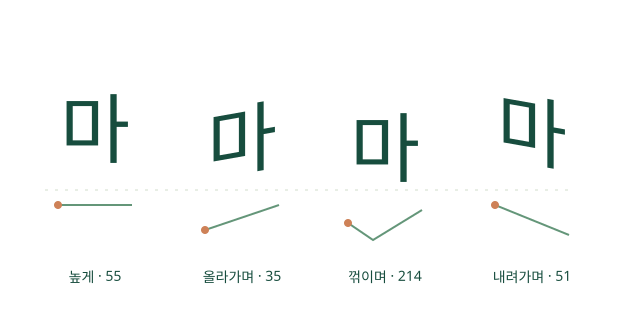

발음을 적으세요
한글 뒤에 중괄호로 음높이·장단·강세를 붙입니다.
마{↗} 아{—} 가{!}WHOBORN · HANGEUL DAY 2026
소리의 높낮이는 글자의 흐름으로,
길이는 글자의 너비로.
Markdown에 발음의 표정을 담아 보세요.
무료 · 오픈소스 · 브라우저에서 실행 · Version 1.0

2026. 10. 09 · 한글날에 보내는 편지
주식회사 후본(Whoborn Inc.)은 매년 세종대왕님의 한글 창제 정신을 기리고 한글날을 기념하는 한글 이벤트를 실시하고 있습니다. 올해는 한글을 바탕으로 가능한 한 세계 여러 언어의 발음을 표현하는 방법을 연구하여, 음절의 높낮이와 길이 등을 자유롭게 표기할 수 있는 Markdown 기반 오픈소스 도구 MarkHangeul을 선보입니다.
누구나 소스코드를 살펴보고, 직접 글을 쓰고, 자신의 편집기나 서비스에 연결할 수 있도록 준비했습니다. 작은 시작이 다양한 언어의 소리를 나누는 더 큰 실험으로 이어지기를 바랍니다.
2026년 10월 9일 한글날
주식회사 후본 올림 ↗
현재 배포 형식은 JavaScript·WebAssembly·CSS 웹 렌더러입니다. 설치형 TTF/OTF/WOFF 폰트 파일은 포함하지 않습니다. 한글 표기는 학습용 근사이며 IPA와 주석으로 보완합니다.
WRITE · SEE · SHARE
한글 뒤에 중괄호로 음높이·장단·강세를 붙입니다.
마{↗} 아{—} 가{!}원문을 고치면 옆 미리보기가 바뀝니다. 아래 버튼으로 먼저 체험해 보세요.
마{toneContour=214}원문 Markdown, 일반 Markdown, 독립 HTML, JSON으로 저장하거나 SDK를 연결하세요.
renderMarkdown(source)살아 있는 예제
마{toneContour=35}버튼을 눌러 글자의 높낮이와 너비를 비교하세요.
미리보기 준비 중…
ONE SCRIPT · MANY VOICES
표준 중국어, 광둥어, 하노이 베트남어, 태국어의 음높이·발성·입성을 비교합니다.
영어·프랑스어·독일어·아랍어 등 11개 언어, 12개 발음 프로필을 선택하세요.
8개 시연 패턴과 실제 언어의 성조 체계는 다릅니다. 모든 언어의 자동 전사나 정확한 발음 재현을 제공하는 서비스는 아닙니다.
언어별 예제를 편집기에서 보기 ↗OPEN FOR BUILDERS
웹 편집기의 미리보기 영역에 같은 렌더러를 연결할 수 있습니다. 표준 Markdown 문서를 입력하면 한글 발음 주석까지 함께 표시합니다.
<script type="module"
src="https://whoborn.github.io/MarkHangeul/sdk/markhangeul.js">
</script>
<mark-hangeul source="마{T2} 아{duration=long}">
</mark-hangeul>GitHub 자체 Markdown 화면에서는 스크립트를 실행할 수 없습니다. JavaScript 실행이 가능한 웹 편집기·플러그인·서비스에서 사용하세요.